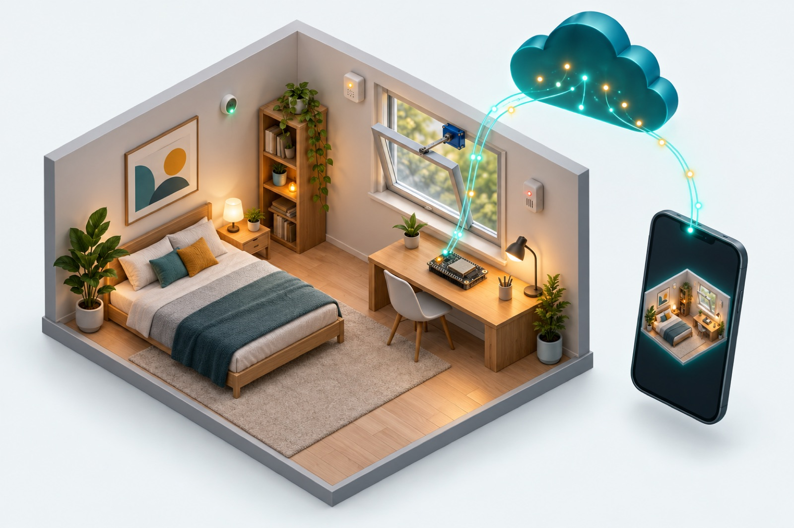
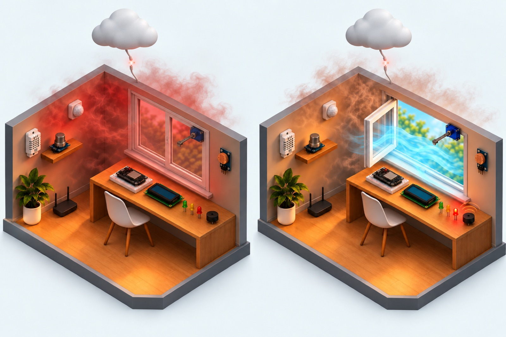
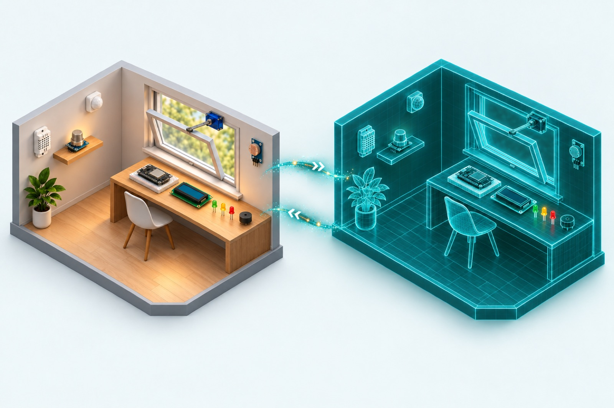
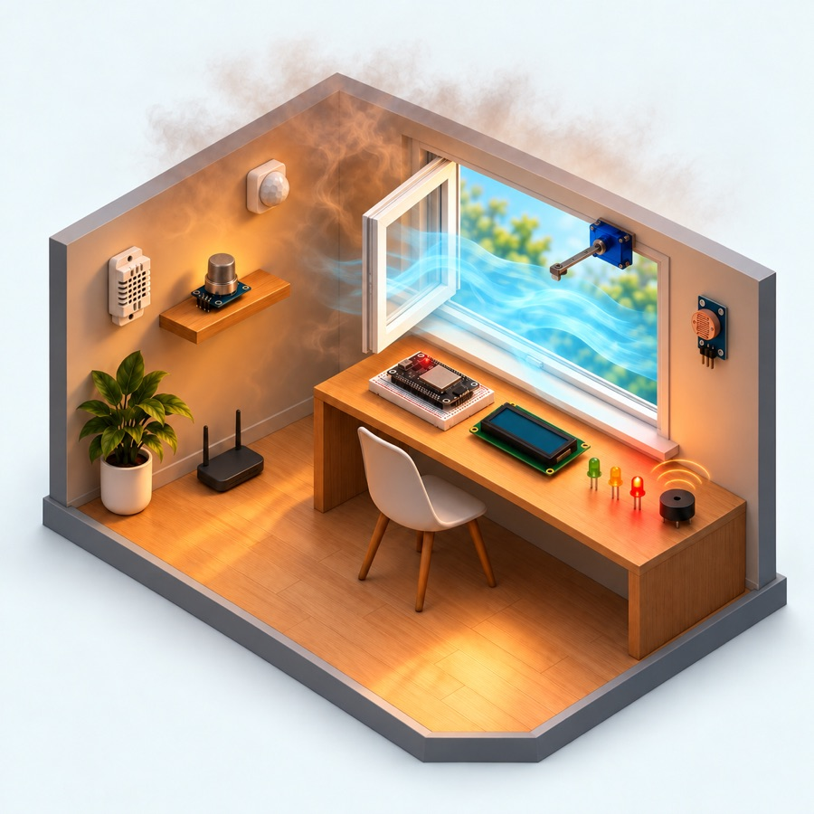
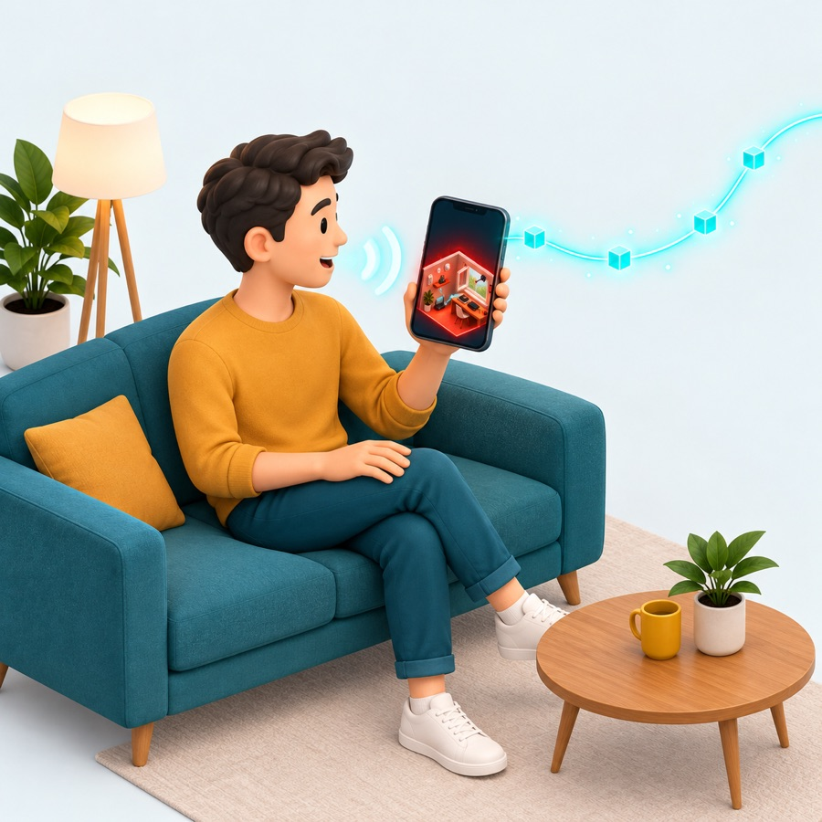
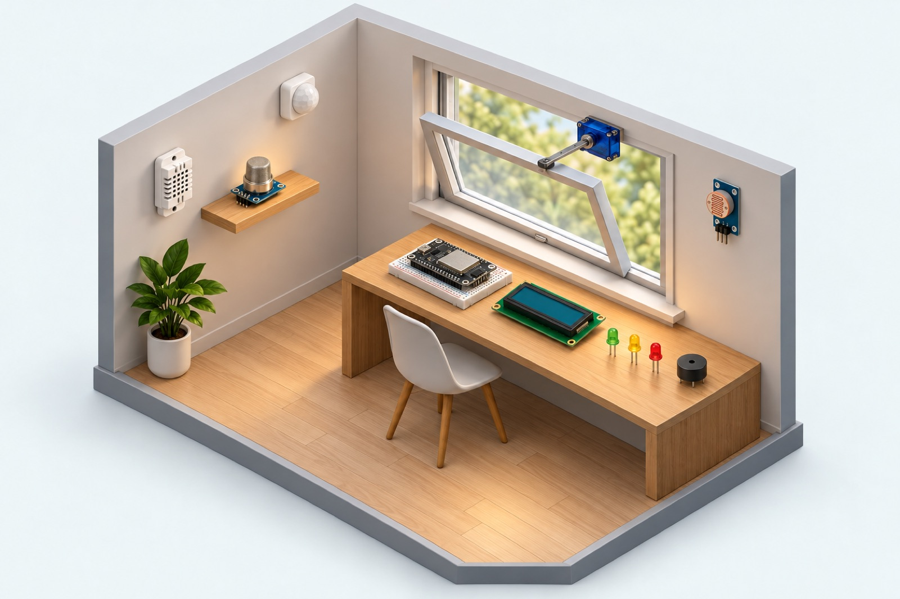
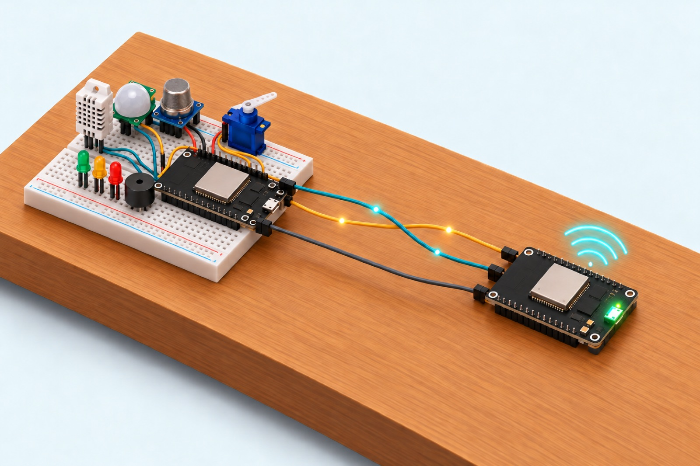
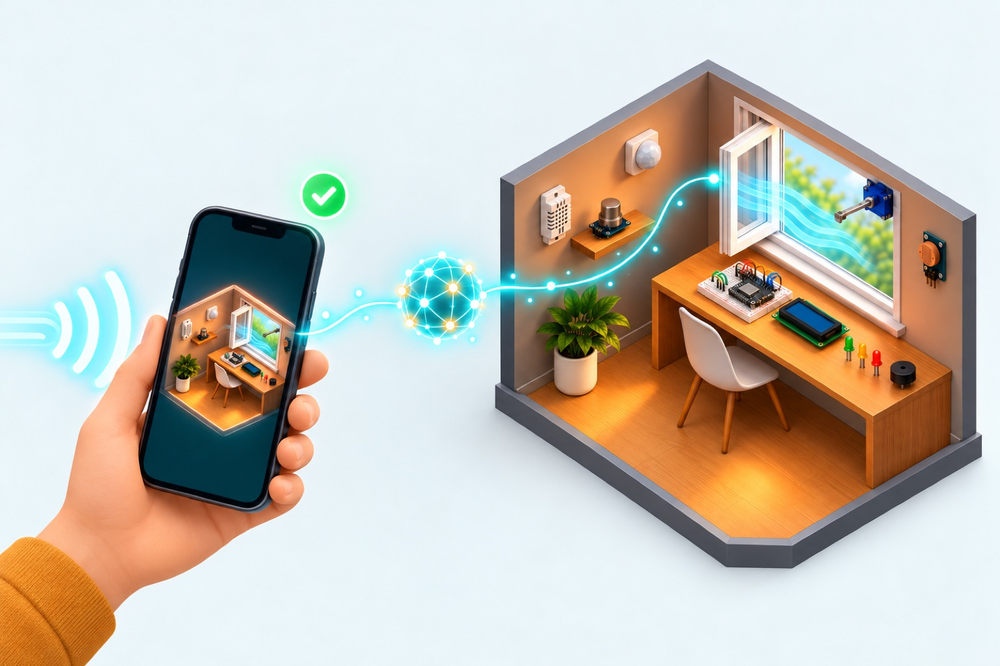

Smart Room Digital Twin
Một căn phòng tự cảm nhận nhiệt độ, độ ẩm, ánh sáng, chất lượng không khí và sự hiện diện của người. Phòng tự quyết định trạng thái an toàn ngay trên vi điều khiển và có một bản sao số chạy live trên web và điện thoại, điều khiển được bằng nút bấm hoặc giọng nói.

01Giới thiệu
1.1Bối cảnh và vấn đề
Một phòng ở hoặc phòng làm việc có thể chuyển sang trạng thái không an toàn rất nhanh: nhiệt độ tăng, không khí ngột ngạt, khí độc tích tụ. Các giải pháp "nhà thông minh" phổ biến thường phụ thuộc hoàn toàn vào cloud. Khi mất Internet, thiết bị trở nên "mù", đúng vào lúc cần phản ứng nhất.

Chỉ dựa vào cloud Edge-firstĐồ án xây dựng một hệ thống IoT hoàn chỉnh cho một phòng, từ cảm biến tới ứng dụng, theo hướng edge-first: quyết định an toàn được đưa ra tại thiết bị, còn cloud đảm nhận quan sát, lưu trữ và chuyển lệnh của con người.
1.2Mục tiêu
- Thu thập dữ liệu môi trường theo thời gian thực: nhiệt độ, độ ẩm, ánh sáng, chất lượng không khí, chuyển động.
- Phân loại trạng thái phòng thành 4 mức NORMAL UNCOMFORTABLE WARNING DANGER và tự điều khiển cửa sổ, còi, đèn báo ngay tại chỗ.
- Truyền dữ liệu tin cậy qua MQTT và xây dựng digital twin phản chiếu đúng trạng thái thiết bị báo lên.
- Cho phép điều khiển hai chiều từ dashboard web, app Android và trợ lý giọng nói dùng LLM.
- Thử nghiệm Edge AI: một mô hình TinyML chạy trên ESP32 thay rule cứng trong điều khiển thường ngày.
1.3Phạm vi
Hệ thống giám sát một phòng. Thiết bị chạy trên trình mô phỏng Wokwi hoặc mạch thật, với hai phương án phần cứng: 1 mạch, hoặc 2 mạch (node cảm biến + gateway mạng). Dữ liệu lưu trong RAM hoặc trên Cloud Firestore. Xác thực người dùng và mã hoá TLS nằm ngoài phạm vi của phiên bản này (xem chương 9).
1.4Đóng góp chính
- Kiến trúc phân lớp đầy đủ, mỗi lớp thay thế được độc lập nhờ một bộ contract (schema) dùng chung.
- Edge rule engine có hysteresis, phát hiện lỗi cảm biến và cơ chế manual override có thời hạn.
- Giao thức link riêng giữa 2 vi điều khiển: frame COBS + CRC-16, tự đồng bộ lại sau nhiễu.
- Mô hình TinyML 552 byte, dữ liệu huấn luyện do LLM gán nhãn theo một chính sách tiện nghi; rule engine vẫn giữ vai trò lớp an toàn cuối.
- Trợ lý giọng nói tiếng Việt và tiếng Anh. Lệnh do AI tạo đi qua đúng các bước kiểm soát như lệnh của người.
02Tổng quan: góc nhìn trực giác
Trước khi vào thuật ngữ, cần nắm hai hình ảnh: bản sao số của căn phòng, và căn phòng như một cơ thể sống.
2.1Digital twin là gì

Phòng thật Bản sao số (twin) số đo → ← lệnh2.2Căn phòng như một cơ thể sống
| Bộ phận cơ thể | Vai trò | Trong hệ thống |
|---|---|---|
| Giác quan | Cảm nhận môi trường | DHT22, LDR, cảm biến không khí, PIR, nút nhấn |
| Phản xạ tuỷ sống | Phản ứng ngay, không chờ não | Edge rules + TinyML trên ESP32 |
| Tay chân | Tác động lại môi trường | Servo cửa sổ, còi, 3 LED, màn hình LCD |
| Dây thần kinh | Truyền tín hiệu hai chiều | UART, Wi-Fi, MQTT |
| Não bộ, trí nhớ | Ghi nhận, theo dõi, điều phối | Backend Fastify + Storage |
| Tấm gương | Phản chiếu cơ thể theo thời gian thực | Digital twin trên web và app |
| Lời nói | Ra lệnh bằng ngôn ngữ tự nhiên | Trợ lý giọng nói (LLM) |
2.3Một tình huống từ đầu đến cuối
Bốn khung dưới đây kể lại một sự cố, đi qua mọi thành phần của hệ thống. Hình 2.3 tóm tắt cùng câu chuyện đó dưới dạng sơ đồ.
-
1Phòng quá nóng
35 °C, không khí ngột ngạt (AQ 900). Cảm biến đo mỗi 1–2 s.
-

2Thiết bị tự phản ứngESP32 chuyển DANGER: LED đỏ, còi, mở cửa 90°. Router mất mạng cũng không sao.
-
3Dữ liệu lên hệ thống
Telemetry qua MQTT tới backend: kiểm tra, lưu, đẩy live qua SSE.
-

4Người dùng ra lệnhTwin trên app chuyển đỏ. Người dùng nói "đóng cửa sổ", lệnh quay về thiết bị.
Ý tưởng cốt lõi: thiết bị tự quyết định (edge-first), cloud quan sát, lưu trữ và chuyển lệnh. Digital twin chỉ phản chiếu sự thật do thiết bị báo lên, không bao giờ tự giả định.
03Kiến trúc phân lớp
Hệ thống được tổ chức theo mô hình kiến trúc IoT nhiều lớp, có thêm một lớp Edge Computing nằm giữa thiết bị và mạng.
3.1Mỗi lớp làm gì, dùng công nghệ nào
| Lớp | Trách nhiệm | Công nghệ |
|---|---|---|
| Perception | Đọc cảm biến, điều khiển servo, còi, đèn | ESP32-S3, C++ (PlatformIO) |
| Edge | Phân loại trạng thái phòng, quyết định cơ cấu chấp hành | Luật ngưỡng + TinyML (huấn luyện bằng PyTorch) |
| Network | Vận chuyển bản tin hai chiều | UART, Wi-Fi, MQTT (Mosquitto) |
| Middleware | Kiểm tra, lưu, theo dõi online, quản lý lệnh, đẩy realtime | Node.js (Fastify), Cloud Firestore |
| Application | Hiển thị twin, biểu đồ, điều khiển, giọng nói | Next.js (web), Expo / React Native (Android) |
| Business | Scenes, luật xung đột lệnh, ngưỡng hiển thị | Thư viện TypeScript dùng chung |
| Xuyên suốt | Một định nghĩa duy nhất cho mọi loại bản tin (single source of truth) | TypeScript |
Vị trí mã nguồn của từng lớp được liệt kê ở Phụ lục C.
3.2Năm nguyên tắc thiết kế
- Edge-first, local autonomy. Backend không bao giờ trực tiếp điều khiển actuator theo luật. Các luật phía server chỉ quét offline và quét timeout lệnh.
- Contract-driven. Firmware, backend và client dùng cùng một định nghĩa message. Đổi schema chỉ sửa ở một chỗ.
- Reported state. Twin = trạng thái thiết bị báo lên gần nhất + số đo mới nhất. Giao diện không "đoán trước" kết quả lệnh (không optimistic update).
- Loose coupling. Thiết bị và backend nói chuyện qua broker; nơi lưu trữ và đường truyền giữa hai mạch đều thay được mà không sửa phần còn lại.
- Simulation-first. Phần nào cũng có bản giả, nên từng người phát triển độc lập mà không cần đủ phần cứng.
04Lớp thiết bị và Edge Computing
Lớp Perception đo và tác động lên phòng; lớp Edge biến số đo thành quyết định.
4.1Phần cứng

1 2 3 4 5 6 7 8 9- 1DHT22 nhiệt độ, độ ẩmcảm biến
- 2Cảm biến khícảm biến
- 3PIR chuyển độngcảm biến
- 4LDR ánh sángcảm biến
- 5Servo cửa sổchấp hành
- 6ESP32-S3bộ xử lý
- 7LCD 1602 I2Chiển thị
- 8LED xanh / vàng / đỏhiển thị
- 9Buzzerchấp hành
| Linh kiện | Đại lượng / vai trò |
|---|---|
| DHT22 | Nhiệt độ (−40…80 °C), độ ẩm (0…100 %), đọc mỗi 2 s |
| Module LDR | Ánh sáng, quy đổi ra lux |
| Biến trở / MQ-135 | Chỉ số chất lượng không khí 0…1000 |
| PIR | Có người / không |
| Nút nhấn | Nhấn ngắn / nhấn giữ 2 s: override tại chỗ |
| Servo | Cửa sổ 0° (đóng) … 90° (mở hết) |
| Buzzer | Còi 2 kHz, kêu ngắt quãng 500 ms |
| LED xanh / vàng / đỏ | Hiển thị trạng thái |
| LCD 1602 I2C | Số đo, trạng thái, thông điệp |
Firmware còn có bản cho bộ kit ESP32 phổ thông (DHT11, OLED, relay thay servo). Sơ đồ chân chi tiết ở Phụ lục C.
4.2Tổ chức firmware
ESP32-S3 có 2 nhân. Firmware chạy trên FreeRTOS và tách việc theo nhân: nhân 1 chạy vòng lặp chính (cảm biến → rule → actuator), nhân 0 chạy tác vụ mạng (Wi-Fi, NTP, MQTT). Hai bên trao đổi qua hàng đợi FreeRTOS, nên kết nối mạng chậm hay rớt cũng không làm trễ phản ứng an toàn.
Phần logic (luật edge, giao thức, đường truyền, TinyML) được viết tách khỏi phần cứng, nên kiểm thử tự động được ngay trên máy tính mà không cần mạch thật.
4.3Edge rule engine
Mỗi giây, rule engine thực hiện ba bước:
- Tiền xử lý tín hiệu: loại giá trị ngoài miền hợp lệ, làm mượt bằng trung bình trượt 3 mẫu. DHT22 hỏng liên tục quá 10 s thì phát cảnh báo lỗi cảm biến.
- Cập nhật state machine 4 mức (Hình 4.2).
- Sinh tín hiệu ra cho LED, còi và góc servo.
| Mức | Nhiệt độ vào / ra | Chất lượng KK vào / ra | Độ ẩm vào / ra |
|---|---|---|---|
| UNCOMFORTABLE | ≥ 29.0 / < 28.5 °C | ≥ 500 / < 470 | ≥ 75 / < 72 % |
| WARNING | ≥ 31.0 / < 30.0 °C | ≥ 700 / < 650 | — |
| DANGER | ≥ 34.0 / < 33.0 °C | ≥ 900 / < 850 | — |
Manual override. Khi người dùng mở/đóng cửa hoặc bật/tắt còi (từ app, dashboard, AI hay nút trên mạch), lệnh đó thắng rule engine trong 120 s, sau đó quyền điều khiển trở về edge. Override tự huỷ nếu phòng leo thang lên mức cao hơn mức lúc đặt override. LED, sự kiện và trạng thái vẫn cập nhật bình thường trong lúc override.
4.4TinyML: mô hình điều khiển trên vi điều khiển
Rule engine dùng ngưỡng cứng và không biết ngữ cảnh: phòng trống hay có người, ngày hay đêm, nóng kèm ẩm. Hệ thống bổ sung một mạng nơ-ron nhỏ chạy trực tiếp trên ESP32, đảm nhận điều khiển thường ngày.
flowchart LR P["Chính sách tiện nghi
viết bằng lời"] --> G["LLM Gemini
gán nhãn tình huống"] G --> D[("8 188 tình huống
đã gán nhãn")] D --> T["Huấn luyện
mạng nơ-ron nhỏ"] T --> Q["Nén về số nguyên 8 bit
còn 552 byte"] Q --> F["Nạp vào ESP32"] Q --> J["Nạp vào thiết bị giả
để mô phỏng"]
Đầu vào (5 giá trị đã làm mượt): nhiệt độ, độ ẩm, chất lượng không khí, log ánh sáng, có người. Đầu ra: trạng thái (4 lớp), góc cửa (một trong 0/20/30/45/60/70/90°), bật còi hay không. Mỗi lần suy luận chỉ khoảng 300 phép nhân-cộng.
| Nhãn \ Dự đoán | NORMAL | UNCOMF. | WARNING | DANGER |
|---|---|---|---|---|
| NORMAL | 148 | 7 | 0 | 0 |
| UNCOMFORTABLE | 8 | 389 | 7 | 0 |
| WARNING | 0 | 4 | 368 | 2 |
| DANGER | 0 | 0 | 13 | 286 |
Ma trận nhầm lẫn trên tập test 1 232 mẫu. Lỗi chỉ xuất hiện giữa các mức liền kề; không có mẫu NORMAL nào bị đoán thành DANGER hay ngược lại. Mô hình chỉ khớp với rule engine khoảng 86 %. Đây là chủ ý, vì chính sách gán nhãn có thêm ngữ cảnh mà rule không có. Ví dụ: có người thì thông gió sớm từ AQ 380, ban đêm thì giới hạn cửa ở 30°, phòng lạnh dưới 18 °C thì đóng cửa.
4.5Thứ bậc an toàn
Khi nhiều nguồn cùng muốn điều khiển cửa sổ và còi, firmware phân xử theo thứ tự cố định sau:
- Rule engine báo DANGER → cửa 90°, còi bật, bất kể mô hình nói gì (safety floor).
- Manual override trong 120 s, từ người dùng hoặc trợ lý AI.
- TinyML điều khiển thường ngày khi có đủ đầu vào hợp lệ.
- Rule engine khi mô hình bị tắt hoặc cảm biến DHT lỗi.
05Lớp mạng và truyền thông
Có hai chặng truyền: giữa hai vi điều khiển (UART), và từ thiết bị lên hệ thống (MQTT).
5.1Hai phương án triển khai thiết bị

Node: cảm biến + edge rules Gateway: Wi-Fi + MQTT UART TX/RX + GNDGateway là một transparent bridge: nó không đọc nội dung bản tin, chỉ lo đăng ký node khi node khởi động, theo dõi sự sống hai chiều (mất node quá 15 s thì báo offline thay cho node), đồng bộ giờ cho node (vì node không có Internet) và báo trạng thái qua LED: đỏ = chưa có Wi-Fi, vàng = chưa có MQTT, xanh = sẵn sàng, nháy = mất node.
5.2Giao thức truyền giữa node và gateway
Bên nhận kiểm tra lần lượt độ dài, mã kiểm lỗi, phiên bản và loại bản tin; sai ở bước nào thì bỏ gói đó và không trả lời. Đường truyền này không xác nhận từng gói, vì độ tin cậy đã được đảm bảo ở tầng trên: mỗi lệnh có mã riêng và thời hạn, còn mất một gói số đo thì 2 s sau đã có gói mới. Phần truyền được viết tách rời, nên cùng một logic chạy được qua dây UART thật, cáp USB, mạng TCP (khi mô phỏng bằng Wokwi) hoặc qua MQTT.
| Loại bản tin | Hướng | Gateway làm gì |
|---|---|---|
| Số đo, trạng thái, sự kiện, xác nhận lệnh | node → gateway | chuyển tiếp lên MQTT |
| Đăng ký | node → gateway | ghi nhận node vừa khởi động |
| Nhịp tim | node → gateway | xác nhận node còn sống |
| Lệnh | gateway → node | chuyển lệnh từ MQTT xuống |
| Đồng bộ giờ | gateway → node | gửi giờ hiện tại |
| Trạng thái mạng | gateway → node | báo gateway còn sống và đã có MQTT hay chưa |
5.3MQTT
Thiết bị và backend không gọi trực tiếp nhau mà giao tiếp qua broker Mosquitto theo mô hình publish/subscribe. Mỗi thiết bị có một nhóm 5 kênh (topic) riêng.
| Kênh | Hướng | QoS / retain | Nội dung |
|---|---|---|---|
| Số đo (telemetry) | lên | 0 | Số đo + trạng thái + cơ cấu chấp hành, mỗi 2 s và ngay khi đổi trạng thái |
| Trạng thái (status) | lên | 1 · retained | Online + cơ cấu chấp hành, khi đổi và mỗi 30 s; kèm LWT báo offline |
| Sự kiện (event) | lên | 0 | Khởi động, đổi trạng thái, lỗi cảm biến, đặt override… |
| Lệnh (command) | xuống | 1 | Lệnh điều khiển, mỗi lệnh có mã riêng |
| Xác nhận lệnh (ack) | lên | 0 | Đã thực hiện / từ chối / lỗi |
- QoS 0 (at most once) cho telemetry: mất một bản tin không sao vì bản tin mới đến ngay sau đó. QoS 1 (at least once) cho lệnh và status: phải đến nơi, nếu trùng thì phía nhận tự lọc.
- Retained message: broker giữ lại status cuối cùng, nên client vừa kết nối nhận được trạng thái ngay, không phải chờ 30 s.
- Last Will and Testament (LWT): thiết bị gửi trước cho broker một bản tin "tôi đã offline". Nếu thiết bị chết đột ngột, broker tự phát bản tin này sau khoảng 20–25 s.
06Lớp Middleware: backend
Backend là client MQTT duy nhất được phép gửi lệnh, là nơi giữ twin, và là cổng duy nhất để client truy cập dữ liệu.
6.1Tiếp nhận dữ liệu (ingestion)
6.2Device presence
Thiết bị được coi là online khi có bản tin thật (bản retained cũ và LWT không tính). Thiết bị chuyển offline khi có LWT, hoặc khi không có dữ liệu trong 45 s (backend quét mỗi 10 s). Mỗi lần chuyển trạng thái đều được ghi vào nhật ký sự kiện. Phía client đánh dấu dữ liệu là "cũ" (stale) nếu thiết bị online nhưng đã 15 s không có telemetry.
6.3Vòng đời của một lệnh
stateDiagram-v2 direction LR state "Chờ gửi" as pending state "Đã gửi" as sent state "Đã thực hiện" as executed state "Bị từ chối" as rejected state "Lỗi" as failed state "Quá hạn" as timeout [*] --> pending: người dùng gửi lệnh pending --> sent: broker đã nhận pending --> executed: thiết bị xác nhận sớm sent --> executed: thiết bị báo đã làm sent --> rejected: thiết bị báo từ chối sent --> failed: thiết bị báo lỗi pending --> timeout: quá 10 s sent --> timeout: quá 10 s không phản hồi executed --> [*] rejected --> [*] failed --> [*] timeout --> [*]
sequenceDiagram participant UI as Dashboard / App participant BE as Backend participant MQ as Mosquitto participant GW as Gateway (2 mạch) participant DV as Node / mạch đơn UI->>BE: gửi lệnh "mở cửa 45°" Note over BE: tối đa 30 lệnh/phút, từ chối nếu thiết bị offline hoặc mất broker BE->>MQ: lệnh (QoS 1) MQ-->>BE: broker đã nhận → "Đã gửi" BE-->>UI: đã tiếp nhận, kèm mã lệnh MQ->>GW: lệnh GW->>DV: lệnh qua UART Note over DV: kiểm tra, xoay servo 45°, override 120 s DV->>GW: trạng thái mới + xác nhận "đã làm" GW->>MQ: trạng thái, xác nhận MQ->>BE: xác nhận BE-->>UI: cập nhật live (SSE) → twin hiện cửa 45°
6.4Lưu trữ
Phần xử lý không phụ thuộc vào nơi lưu cụ thể (repository pattern). Có hai lựa chọn: RAM (mặc định, mất khi khởi động lại) và Cloud Firestore.
| Dữ liệu | Cách lưu |
|---|---|
| Thiết bị | Trạng thái mới nhất của từng thiết bị; thời điểm "thấy lần cuối" ghi tối đa 1 lần / 15 s |
| Số đo | Mỗi bản ghi có mã cố định theo số thứ tự, nên ghi trùng không tạo bản sao (idempotent); chỉ giữ 1 bản ghi mỗi 15 s |
| Sự kiện | Nhật ký của thiết bị và server, cũng đặt mã theo số thứ tự |
| Lệnh | Toàn bộ vòng đời của từng lệnh, cập nhật bằng transaction |
Tối ưu chi phí. Gói miễn phí giới hạn 20 000 lượt ghi mỗi ngày. Live UI vẫn nhận telemetry mỗi 2 s qua SSE, nhưng bản lưu chỉ giữ 1 bản ghi mỗi 15 s, và trạng thái thiết bị chỉ được ghi khi thực sự thay đổi. Nhờ vậy số lượt ghi đo được giảm từ 13 920 xuống 6 480 lượt/ngày/thiết bị, đủ cho 3 thiết bị trong gói miễn phí.
6.5Giao tiếp với client
Client chỉ cần bốn thao tác với backend:
- Lấy ảnh chụp hiện tại của phòng: trạng thái thiết bị, số đo 15 phút gần nhất, sự kiện và lệnh gần đây.
- Mở một luồng live để nhận mọi thay đổi ngay khi xảy ra.
- Gửi lệnh và nhận lại mã lệnh để theo dõi.
- Gửi câu nói cho trợ lý và nhận câu trả lời cùng các lệnh đã tạo.
Danh sách API cụ thể ở Phụ lục C.
Hệ thống chọn SSE thay vì WebSocket vì dữ liệu chỉ cần chảy một chiều từ server xuống; lệnh đi ngược lên bằng REST. SSE chạy trên HTTP thường và trình duyệt tự kết nối lại khi rớt.
07Lớp ứng dụng và dịch vụ
Hai client ngang hàng, cùng dùng một API và cùng một thư viện logic twin.
7.1Dashboard web
Viết bằng Next.js, xuất dạng static. Dashboard gồm thẻ số đo (tô màu theo ngưỡng), bản vẽ phòng (twin SVG: góc cửa, còi, trạng thái), biểu đồ 15 phút có đường ngưỡng, bảng điều khiển với đếm ngược override, scenes và nhật ký sự kiện. Dữ liệu được tải một lần khi mở trang, sau đó cập nhật liên tục qua luồng live SSE.
7.2App Android
Viết bằng Expo / React Native, gồm 4 tab: Home (twin + số đo), Controls (cửa sổ, còi, scenes, bảng mạch), Trends (biểu đồ) và Activity (sự kiện), cộng thêm màn Settings. App nhận cập nhật live giống dashboard và lưu cài đặt ngay trên máy.
7.3Trợ lý giọng nói

giọng nói LLM đã xác nhận ✓ mở cửa sổsequenceDiagram autonumber participant U as Người dùng participant A as App participant S as Backend participant L as LLM participant D as Thiết bị U->>A: nói "mở cửa sổ một nửa" A->>A: giọng nói → chữ (tiếng Việt / Anh) A->>S: câu nói + ngữ cảnh hội thoại S->>L: câu nói + trạng thái phòng hiện tại L-->>S: kế hoạch: ý định, lệnh, câu trả lời S->>S: kiểm tra kế hoạch, giới hạn góc 1–90° S->>D: lệnh mở cửa 45° (MQTT) S-->>A: câu trả lời + mã lệnh A->>U: đọc câu trả lời thành tiếng D-->>A: xác nhận qua SSE → thẻ kết quả ✓
Hệ thống đặt LLM ở server vì ba lý do: khoá API không nằm trong APK; server có sẵn trạng thái twin mới nhất để đưa vào prompt; và mọi lệnh đều đi qua cùng một cổng kiểm soát. Mỗi câu nói chỉ cần một lần gọi LLM, trả về một kế hoạch có cấu trúc cố định, thay vì để AI gọi qua lại nhiều bước. Cách này nhanh hơn và dễ kiểm thử hơn. Có thể đổi giữa Gemini, Claude và một bộ luật cố định (chạy được khi không có mạng).
7.4Dịch vụ: scenes
| Scene | Các lệnh gửi lần lượt |
|---|---|
| Welcome | Mạch nháy đèn và bíp chào → LCD hiện "Welcome!" |
| Ventilate | Mở cửa 90° → LCD hiện "Airing the room" |
| Good night | Đóng cửa → LCD hiện "Good night" |
| Automatic | Trả quyền điều khiển cho chế độ tự động → LCD hiện "Auto mode" |
Scene chỉ tồn tại ở phía client. Thiết bị không biết scene là gì, chỉ nhận các lệnh thường, nên không phải sửa firmware khi thêm scene mới.
08Độ tin cậy, kiểm thử và thực nghiệm
8.1Cơ chế tin cậy
| Vấn đề | Cơ chế | Ở đâu |
|---|---|---|
| Mất Internet | Quyết định an toàn chạy tại edge | Firmware |
| Số đo nhiễu, dao động quanh ngưỡng | Trung bình trượt + hysteresis + giữ mức 5 s | Edge rules |
| Cảm biến hỏng | Báo lỗi cảm biến; mô hình nhường cho rule | Edge |
| Nhiễu trên dây UART | CRC-16 + COBS tự đồng bộ lại | Link |
| Thiết bị chết đột ngột | LWT + quét 45 s + heartbeat của gateway | MQTT, backend |
| Bản tin lặp do QoS 1 | Lọc trùng theo số thứ tự; ghi trùng không tạo bản sao | Backend, Firestore |
| Lệnh không đến nơi | QoS 1 + ack + timeout 10 s | Backend |
| Các xác nhận đến lệch thứ tự | Compare-and-set khi chuyển trạng thái | Backend |
| Spam lệnh (kể cả từ AI) | Rate limit 30 lệnh/phút/thiết bị | Backend |
| Dữ liệu sai định dạng | Định nghĩa bản tin dùng chung, giới hạn 1 KB | Toàn hệ thống |
8.2Mô phỏng: thay phần nào bằng đồ giả
Mỗi thành phần đều có bản giả: fake-device thay toàn bộ thiết bị và có sẵn các kịch bản nóng, khói, ẩm, ban đêm…; fake-node / fake-gateway thay từng mạch; splice nối hai mạch Wokwi và giả lập rút dây. Backend và client chạy giống hệt ở mọi tổ hợp, vì chúng chỉ nhìn thấy bản tin MQTT.
8.3Kiểm thử tự động
| Bộ test | Số test | Nội dung |
|---|---|---|
| Firmware (chạy trên PC) | 115 | Luật edge, giao thức, đóng gói gói tin, gateway/node, TinyML |
| Định nghĩa bản tin | 28 | Cấu trúc của mọi loại bản tin |
| Backend | 36 | Tiếp nhận dữ liệu, vòng đời lệnh, lưu trữ, TinyML khớp giữa hai bản, trợ lý |
| Mô phỏng đường truyền | 23 | Đóng gói, đường truyền, gateway, nối hai mạch |
Ngoài ra, phần lưu trữ Firestore được kiểm thử lại toàn bộ trên Firestore emulator.
8.4Kết quả thực nghiệm
- Luồng end-to-end thiết bị → dashboard → lệnh ngược lại chạy được cả với 1 mạch và 2 mạch trên Wokwi.
- Lệnh mở cửa 45° được thiết bị xác nhận khoảng 3 ms sau khi gửi (thiết bị giả, chạy trên máy local).
- Rút dây link 20 s: sau 15 s dashboard báo offline, nối lại thì online.
- Tắt broker: thiết bị kết nối lại với backoff 1–16 s, mỗi lần mất kết nối chỉ kết nối lại đúng một lần.
- TinyML: kịch bản nóng ẩm → UNCOMFORTABLE, cửa 45° (rule engine vẫn để 0°); AQ 627 có người → cửa 60°.
- Firestore: dữ liệu và biểu đồ vẫn còn sau khi khởi động lại backend; số lượt ghi nằm trong gói miễn phí.
09Hạn chế và hướng phát triển
| Hạng mục | Hiện trạng | Hướng tiếp theo |
|---|---|---|
| Xác thực người dùng | chưa có | Firebase Auth cho dashboard, app và API |
| Bảo mật broker | chưa TLS, chỉ chạy trong LAN | TLS + user/password (HiveMQ Cloud, EMQX hoặc Mosquitto trên VM) |
| 2 mạch thật | mới chạy trên Wokwi | Chạy theo checklist nối dây UART (M3) |
| Triển khai cloud | Firestore xong; Hosting, Cloud Run mới là mock | Deploy backend lên Cloud Run, dashboard lên Firebase Hosting |
| Nhiều node | 1 node / gateway | Gateway đa node, hoặc ESP-NOW thay UART |
| Buffer khi mất mạng | bỏ telemetry khi offline | Lưu tạm trên flash, gửi bù khi có mạng |
| Twin | SVG 2D | Twin 3D (three.js), giữ nguyên dữ liệu đầu vào |
| Cảm biến khí | biến trở giả lập / MQ-135 tương đối | Cảm biến hiệu chuẩn (CO₂ NDIR, PM2.5) |
AThuật ngữ
| Thuật ngữ | Nghĩa trong hệ thống này |
|---|---|
| Digital twin | Bản sao số của phòng: trạng thái thiết bị báo lên gần nhất + telemetry mới nhất |
| Telemetry | Bản tin số đo định kỳ từ thiết bị |
| Edge computing | Xử lý và ra quyết định ngay tại thiết bị, gần nguồn dữ liệu |
| Hysteresis | Ngưỡng vào khác ngưỡng ra để trạng thái không dao động |
| Actuator | Cơ cấu chấp hành: servo, còi, LED, LCD |
| Publish / subscribe | Mô hình giao tiếp qua broker; bên gửi và bên nhận không biết nhau |
| QoS 0 / 1 | Mức đảm bảo giao bản tin của MQTT: tối đa một lần / ít nhất một lần |
| Retained message | Bản tin cuối cùng của topic được broker giữ lại cho client mới |
| LWT | Bản tin "di chúc" broker tự phát khi client mất kết nối bất thường |
| Presence | Trạng thái online / offline của thiết bị |
| Ack | Xác nhận thiết bị đã thực thi, từ chối hay lỗi khi nhận lệnh |
| Idempotent | Thực hiện lặp nhiều lần cho cùng kết quả như một lần |
| Compare-and-set | Chỉ chuyển trạng thái khi trạng thái hiện tại đúng như mong đợi |
| COBS | Cách mã hoá để byte 0x00 chỉ xuất hiện ở cuối frame |
| CRC-16 | Mã kiểm tra lỗi 16 bit cho frame |
| SSE | Server-Sent Events: server đẩy sự kiện một chiều qua HTTP |
| TinyML | Mô hình học máy đủ nhỏ để chạy trên vi điều khiển |
| Quantization (int8) | Lượng tử hoá: lưu trọng số bằng số nguyên 8 bit để giảm kích thước |
| Manual override | Lệnh của người tạm thời thắng điều khiển tự động |
| Safety floor | Lớp an toàn cuối: rule DANGER luôn thắng mô hình |
BKế hoạch hình ảnh
Báo cáo dùng ba loại hình. Minh hoạ (tạo bằng AI, không chứa chữ; nhãn được đặt bằng HTML để luôn chính xác) giúp nắm ý trực giác. Sơ đồ (vẽ vector) thể hiện chính xác cơ chế. Ảnh chụp thật sẽ được thêm ở Phase 2, thay vào các khung nét đứt ở trên.
| Hình | Loại | Trạng thái |
|---|---|---|
| 1.1 Cloud-only và edge-first · 2.1 Digital twin · 2.2 Câu chuyện 4 bước | Minh hoạ AI | xong |
| 4.1 Giải phẫu căn phòng · 5.2 Hai mạch · 7.1 Giọng nói · ảnh bìa | Minh hoạ AI | xong |
| 2.3 Vòng khép kín · 3.1 Kiến trúc 6 lớp | Sơ đồ | xong |
| 4.2 State machine · 4.3 Pipeline TinyML | Sơ đồ | xong |
| 5.1 Hai phương án · 5.3 Cấu trúc gói tin | Sơ đồ | xong |
| 6.1 Ingest · 6.2 Vòng đời lệnh · 6.3 Downlink · 7.2 Trợ lý giọng nói | Sơ đồ | xong |
| Ảnh 4.1 Mạch Wokwi 1 board | Ảnh chụp | Phase 2 · tự chụp trong VS Code |
| Ảnh 5.1 Hai mạch Wokwi | Ảnh chụp | Phase 2 · tự chụp trong VS Code |
| Ảnh 5.2 Luồng MQTT | Ảnh chụp | Phase 2 · chụp terminal |
| Ảnh 7.1 Dashboard | Ảnh chụp | Phase 2 · có thể tự động hoá |
| Ảnh 7.2 App Android | Ảnh chụp | Phase 2 · chụp trên emulator |
| Ảnh 8.1 Firestore console | Ảnh chụp | Phase 2 · cần đăng nhập |
CChi tiết kỹ thuật
Dành cho người muốn đối chiếu với mã nguồn. Không cần đọc phần này để theo dõi báo cáo.
C.1Mã nguồn theo lớp
| Lớp | Thư mục | Công nghệ |
|---|---|---|
| Perception | device/src | C++, PlatformIO, Arduino core 2.x |
| Edge | device/lib/edge_rules, device/lib/edge_ai, ml/ | C++ thuần, PyTorch (huấn luyện) |
| Network | device/lib/link, broker/ | UART, Wi-Fi, MQTT 3.1.1, Mosquitto |
| Middleware | server/, cloud/ | Node.js 24, Fastify, mqtt.js, Firestore |
| Application | dashboard/, mobile/ | Next.js 16, Expo SDK 55, React Native |
| Business | packages/twin-core | TypeScript |
| Xuyên suốt | packages/contracts | TypeScript + Zod |
C.2Sơ đồ chân ESP32-S3
| Linh kiện | Chân |
|---|---|
| DHT22 | GPIO15 |
| Module LDR | GPIO1 (ADC1) |
| Biến trở / MQ-135 | GPIO2 (ADC1) |
| PIR | GPIO16 |
| Nút nhấn | GPIO17 |
| Servo | GPIO18 |
| Buzzer (PWM) | GPIO21 |
| LED xanh / vàng / đỏ | GPIO38 / 39 / 40 |
| LCD 1602 I2C | SDA 8 · SCL 9 |
Chân analog dùng ADC1 vì ADC2 của ESP32 không dùng được khi Wi-Fi đang bật.
C.3Topic MQTT
| Topic | QoS / retain | Ghi chú |
|---|---|---|
srdt/{deviceId}/telemetry | 0 | mỗi 2 s |
srdt/{deviceId}/status | 1 · retained | LWT {"online":false} |
srdt/{deviceId}/event | 0 | BOOT, STATE_CHANGED, SENSOR_FAULT, OVERRIDE_SET… |
srdt/{deviceId}/command | 1 | OPEN_WINDOW (1–90), CLOSE_WINDOW, BUZZER_ON, BUZZER_OFF, CLEAR_OVERRIDE, IDENTIFY, SHOW_MESSAGE |
srdt/{deviceId}/command/ack | 0 | executed / rejected / failed |
Mỗi bản tin mang bootId và seq; backend khử trùng theo cặp (bootId, seq), và Firestore dùng {bootId}-{seq} làm document id.
C.4Frame của link UART (v0.2)
Frame thô: version (1 B, 0x01) | type (1 B) | seq (1 B) | payload (0–1024 B) | CRC-16/CCITT (2 B, lo trước). Trên dây, frame được mã hoá COBS và kết thúc bằng byte 0x00; tốc độ 115200 baud.
| Type | Tên | Hướng |
|---|---|---|
| 0x01–0x04 | TELEMETRY, STATUS, EVENT, ACK | node → gw |
| 0x05 | HELLO | node → gw |
| 0x06 | HEARTBEAT | node → gw |
| 0x81 | COMMAND | gw → node |
| 0x82 | TIME | gw → node |
| 0x83 | LINK_STATE | gw → node |
Ví dụ HEARTBEAT seq 7: raw 01 06 07 ED 21 → wire 06 01 06 07 ED 21 00.
C.5REST API và SSE
| Method | Path | Mục đích |
|---|---|---|
| GET | /api/devices/:code | Snapshot: thiết bị + telemetry 15 phút + 20 event + 20 lệnh |
| GET | /api/devices/:code/stream | SSE: snapshot đầu tiên, sau đó device / telemetry / event / command |
| POST | /api/devices/:code/commands | Gửi lệnh → 202 / 409 (offline) / 429 (rate limit) / 503 (mất broker) |
| POST | /api/devices/:code/assistant | Câu nói → ý định, câu trả lời, các lệnh đã tạo |
| GET | /health | Trạng thái MQTT, storage, số client SSE |
C.6Cloud Firestore
| Collection | Document id |
|---|---|
devices/{code} | mã thiết bị |
devices/{code}/telemetry/{id} | {bootId}-{seq} |
devices/{code}/events/{id} | {bootId}-{seq} |
commands/{id} | uuid |
C.7Lệnh chạy demo
| Việc | Lệnh |
|---|---|
| Unit test firmware trên PC | pio test -e native |
| Mô phỏng 1 mạch | Wokwi, môi trường esp32-s3 |
| Mô phỏng 2 mạch | Wokwi node-wokwi + gateway-wokwi, rồi pnpm --filter @srdt/link-sim splice (giả lập rút dây: cut 20) |
| Theo dõi MQTT | mosquitto_sub -h 127.0.0.1 -t 'srdt/#' -v |
| Thiết bị giả | preset calm, hot, smoke, humid, night… |
| Chọn LLM cho trợ lý | ASSISTANT_PROVIDER=gemini | anthropic | rules |